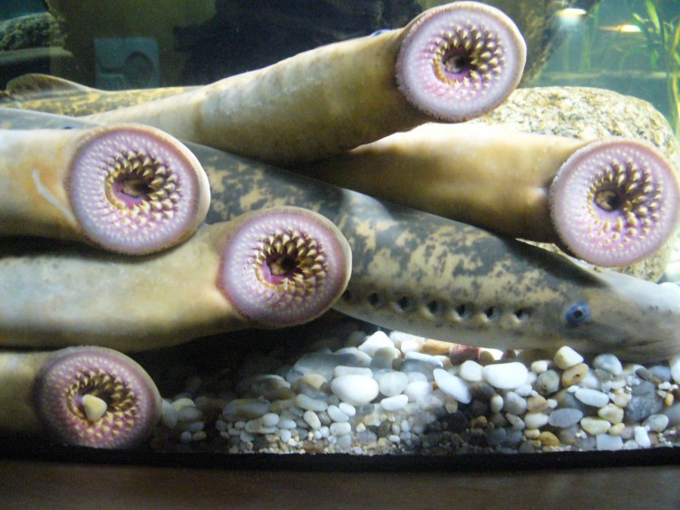

Tuesday, April the 24th, 2012
back to: title, date or indexes
I am grateful to Glyn Webster for alerting me to the latest fiendish schemes of the US Navy:
the lamprey's body contains a single wavelength of oscillation at any given time, and thus always maintains an S-shape during swimming. Speed is proportional to the frequency of this wave, and can vary by an order of magnitude. Lampreys can even swim backward. Ayers is building an autonomous robotic lamprey that can do the same thing.
Ayers is not new to this. He's been building robotic lobsters for years, and he's basing his lamprey's technology on those
“Now we're almost to the point where theoretically we could begin building whole platoons of robotic lampreys and putting them on operational maneuvers in the water,” says Dr. Joel Davis, “A robotic lamprey is ideal for stealthy underwater search and identification missions.”
